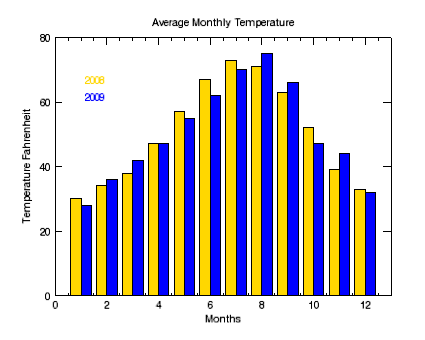

Bar plots are useful for comparing data in an easy-to-read visualization. The BARPLOT function allows you to quickly create bar plots and define colors, styles, and annotations. The bar plot shown below displays average monthly temperature data for two different years.

The code shown below creates the graphic shown above. You can copy the entire block and paste it into the IDL command line to run it. The properties used are explained in detail after the example code.
; Define the data.
TEMP08=[30, 34, 38, 47, 57, 67, 73, 71, 63, 52, 39, 33]
TEMP09=[28, 36, 42, 47, 55, 62, 70, 75, 66, 47, 44, 32]
months=[1, 2, 3, 4, 5, 6, 7, 8, 9, 10, 11, 12]
; Define the first barplot and the axes and titles.
b1 = BARPLOT(months, TEMP08, index=0, NBARS=2, FILL_COLOR='gold', $
YRANGE=[0, 80], YMINOR=0, YTITLE='Temperature Fahrenheit', $
XTITLE='Months', TITLE='Average Monthly Temperature')
; Define the second barplot to display in the same window.
b2 = BARPLOT(months, TEMP09, INDEX=1, NBARS=2, FILL_COLOR='blue', /OVERPLOT)
; Use the TEXT function to add annotations to describe the data.
text08 = TEXT(2,75,'2008', /CURRENT, COLOR='gold', /DATA)
text09 = TEXT(2,70,'2009', /CURRENT, COLOR='blue', /DATA)
| • | INDEX - defines the display order of the bars in the barplot. Index numbers start at zero. |
| • | NBARS - defines the number of bars to display. |
| • | FILL_COLOR - defines the bar color. Use RGB codes (for example, [0, 0, 255] defines the color blue), hexadecimal codes (#0000FF), or color names (blue). |
| • | [X,Y,Z]RANGE - defines the range of the axis. |
| • | [X,Y,Z]MINOR - defines that no minor axis ticks display. |
| • | [X,Y,Z]TITLE - defines the title for the axis. |
| • | TITLE - defines the title for the window. |
| • | CURRENT - tells IDL to place the graphic into the currently active window. |
| • | DATA - displays the element in data coordinates. |
| • | BARPLOT |
| • | BARPLOT Shading and Stacking |
| • | Change Graphics Properties |
| • | Multiple Graphics in One Window |
| • | Saving Graphics |
| • | PLOT |
| • | Graphics |
| • | Formatting IDL Graphics Symbols and Lines |